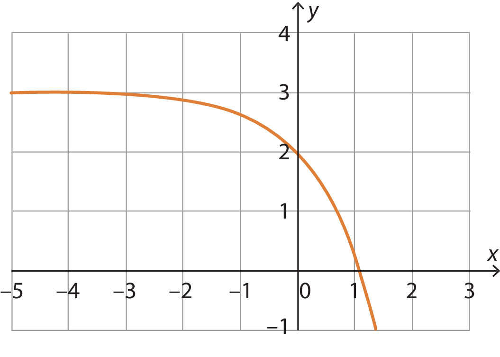
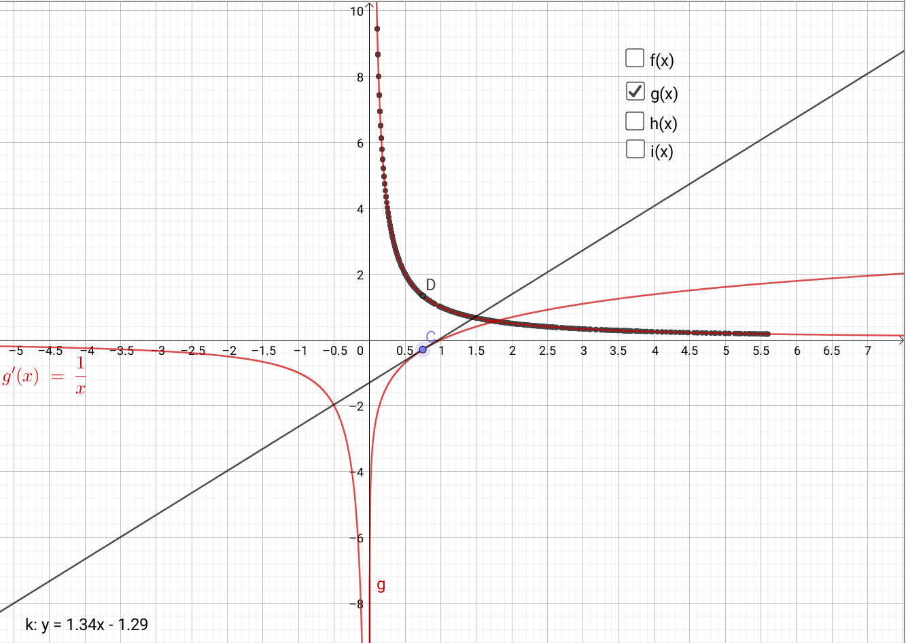
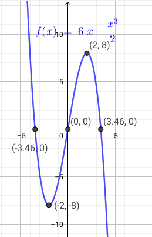
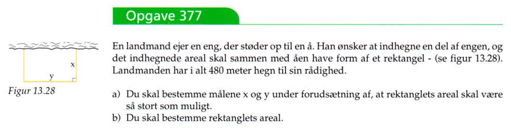
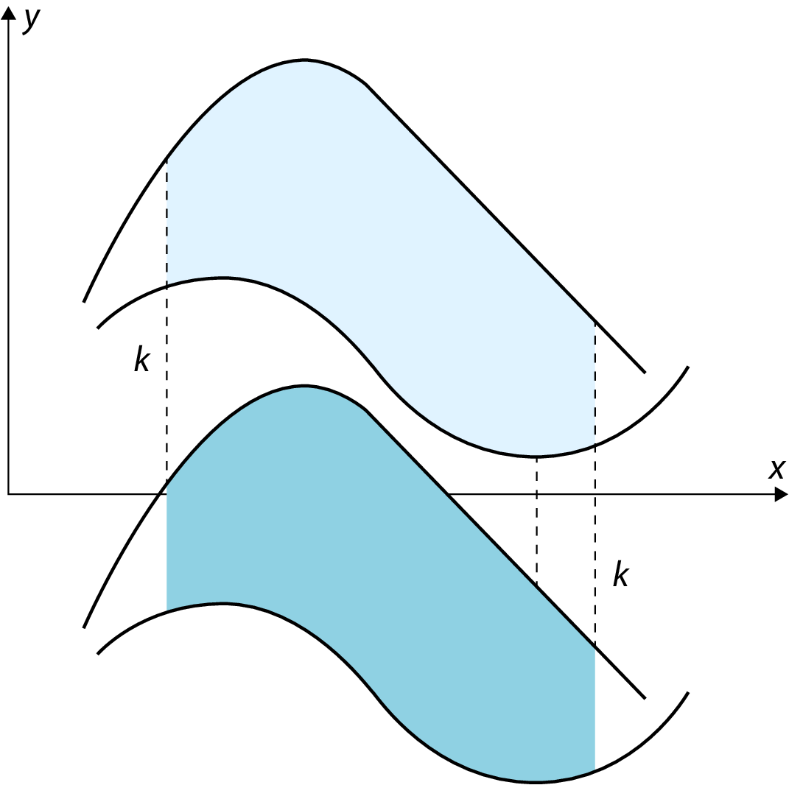
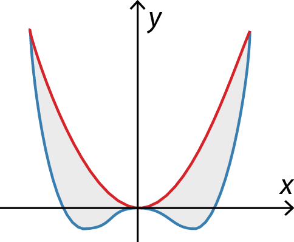
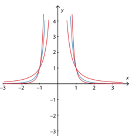
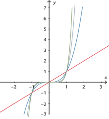
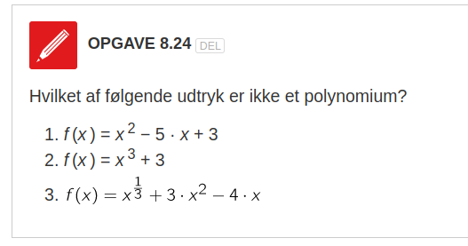

Funktioner og infinitesimalregning
Matematik
Vibenshus Gymnasium
Hvad vi skal
- Intro til funktioner generelt
- Intro til afledte funktioner (differentiation) og funktioners hældninger
- Intro til stamfunktioner/antiafledte (integration) og arealer under grafer
- Intro til funktionstyper, deres afledte funktioner og deres stamfunktioner
- Arbejde med matematikprojekt skatepark.
- Vi går mere i deltalje med differentiation og integration i senere forløb
Funktioner generelt
Sammenhæng mellem variable
I kender det allerede:
- Regningen på energidrik afhænger af antallet af energidrik, der købes (og mærket selvfølgelig).
- Renteindtægterne i banken afhænger af pengene på bankbogen.
- Tidevand afhænger af tidspunktet på døgnet.
Fælles er:
- at en størrelse afhænger af en anden.
- men at den anden størrelse ikke afhænger af den første.
Eksempel
- Der er ikke både flod og ebbe (høj- og lavvande) på samme tid.
- Vi betaler ikke to forskellige beløb for det samme antal mælk (af samme mærke og i samme butik).
To variabeltyper
- Den uafhængige variabel
- Den I før har kaldt x.
- Værdierne kan vælges "frit".
- Den afhængige variabel
- Den I før har kaldt y og nu kommer til at kalde \(f(x)\).
- Værdien afhænger af, hvad den uafhængige værdi.
Parsammenligning
Find selv på eksempler, hvor en størrelse afhænger af en anden.
- Først i makkerpar.
- Del jeres eksempler i makkerskabsgruppen.
Funktionsbegrebet
I matematik er en funktion en matematisk sammenhæng mellem to størrelser.
En funktion forstås som en beskrivelse af sammenhængen mellem en uafhængig variabel \(x\) og en afhængig variabel \(f(x)\).
Det gælder, at der til én værdi af den uafhængige variabel \(x\) kun findes én værdi af den afhængige variabel \(f(x)\).
Repræsentationsformer
Typisk beskrives en matematisk funktion ved en forskrift og/eller en graf.
Forskrifter:
Hvad skal det sige inde i hovedet?
De tilhørende grafer:

Opgave 8.4
Diskutér i makkerpar.

Opgave 8.1 og 8.2

DM og VM
Nej, der er hverken tale om Danmarks- eller verdensmesterskabet her.
- DM Definitionsmængde
- Mængden af tal, der kan anvendes som uafhængig variabel, typisk \(x\) i en funktion.
- VM Værdimængde
- Mængden af funktionsværdier, typisk \(f(x)\), der fremkommer ved gennemløb af definitionsmængden.
Det skrives på en helt særlig måde.
Gad vide, hvad det siger inde i hovedet? :)
Graferne fra tidligere
Opgave 8.5 og 8.6
- Note 8.5: Kan I se, at der er forskel på "bollerne" i enderne af graferne? Der er en lille forskel i deres betydning.
- Ekstra udfordring til opgave 8.6: Bestem Dm og Vm uden at tegne graferne først.

Monotoniforhold
- Når noget er monotont, er det ensformigt.
- En funktion er monoton, når den er voksende eller aftagende i hele sin Dm.
- En funktion, som hverken vokser eller aftager, er konstant.
- En funktion kan skifte mellem at være voksende og aftagende. Man fastlægger dens monotoniforhold.
- f er voksende i et interval, hvis \(x_1 < x_2 \Rightarrow f(x_1) < f(x_2)\) eller \(f'(x) > 0\)
- f er aftagende i et interval, hvis \(x_1 < x_2 \Rightarrow f(x_1) > f(x_2)\) eller \(f'(x) < 0\)
- f er konstant, hvis \(f(x) = k\) i hele Dm.
- Læg mærke til apostroffen. Mere om det under differentialregning.



Ekstremumspunkter
- Et ekstremumspunkt er enten er minimumspunkt eller et maksimumspunkt.
- Hedder også en ekstremum i ental og ekstrama i flertal.
- Der er både globale og lokale ekstremumspunkter.

Eksempel 8.7
- Lokalt og globalt minimum: \((3\,,\, -13.5)\)
- Lokalt maksimum: \((-2\,,\,7.33)\)
- Globalt maksimum: \((6\,,\,18)\)
- Funktionens monotoniforhold:
- \(f\) er voksende i intervallerne \(-3 \leq x < -2\) og \(3< x \leq 6\)
- \(f\) er aftagende i intervallet \(-2 < x < 3\)
- \(Vm(f) = \left\{ f \in \mathbb{R} | -13.5 \leq f \leq 18 \right\}\)

Opgave 8.8 og 8.9


Intro til differentiation
Det hele omhandler hældninger!

- Afledte funktioner: \(f'(x)\) eller \(\frac{d f}{dx}\) - En funktion for en funktions hældningstal
- Tangentligninger
- Funktionsanalyse:
- Maksimum og minimum (ekstremumspunkter)
- Vendetangentpunkter
- Monotoniforhold
- Optimering
Hældningen for en funktion
- I ét punkt på en graf, har grafen samme hældning som tangenten.
- Hældningen ændrer sig som funktion af x.
- Men, hvordan ændrer hældningen sig funktion af x?

Opgave - undersøgelse af hældninger
I skal undesøge hældningerne for forskellige funktioner (den til højre). Én funktion pr person i makkerskabsgruppen.
I geogebra:
- Indskriv funktionsforskriften i geogebra i inputfeltet.
- Vælg punkt-værktøjet og tryk på grafen for funktionen (så sidder punktet fast på grafen).
- Vælg værktøjet tangenter og klik først på punktet og så på grafen.
- Flyt på punktet og se, at tangenten og særligt dens hældning ændrer sig.
- Plot sammenhørende værdier af x og hældningen af tangenten.
- Den hurtige løsning er:
- skriv følgende i inputfeltet:
B = (x(A),hældning(g)) - Højreklik på det nye punkt
Bog sæt mærke ved tænd spor. - Træk punktet
Alangsomt rundt langs grafen og se en masse prikker blive tegnet.
- skriv følgende i inputfeltet:
Hvilke funktioner, ser det ud til, at jeres prikker danner?

- Vi må nok tage det én funktion af gangen.
\(f(x)=x^2\)

- Den afledte funktion er \[f'(x) = 2x\]
\(g(x)=ln(x)\)

- Den afledte funktion er \[g'(x) = \frac{1}{x}\]
\(h(x)=\frac{1}{3}x^3-x\)

- Den afledte funktion er \[h'(x) = x^2-1\]
\(i(x)=sin(x)\)

- Den afledte funktion er \[i'(x) = cos(x)\]
Hvordan bestemmer man så den afledte funktion?
Ja, man skal anvende sekanter og begrebet grænseværdi.
Grafisk ser de således ud

Tretrinsreglen
- Trin 1
- Opskriv differenskvotienten aka sekantens hældning. (Er også gennemsnitshældningen mellem de to punkter.) \[a_\text{sekant} = \frac{\Delta y}{\Delta x} = \frac{f(x+\Delta x)-f(x)}{\Delta x}\]
- Trin 2
- Omskriv det fremkomne udtryk, så næste trin bliver nemmere at gennemføre.
- Trin 3
- Bestem differentialkvotienten ved at bestemme grænseværdien for \(\Delta x \to 0\) for differenskvotienten. \[f'(x) = \frac{dy}{dx} = \lim_{\Delta x \to 0} \left( \frac{\Delta y}{\Delta x} \right) = \lim_{\Delta x \to 0} \left( \frac{f(x+\Delta x) - f(x)}{\Delta x} \right)\]
Eksempel
Vi prøver lige på tavlen med \[f(x) = x^2\]
Opgaver
Bestem differentialkvotienterne (de afledte funktioner) for de følgende funktioner vha tretrinsreglen
- Det er lidt tricky for \(h(x)\).
- Det noget mere tricky for \(i(x)\). Der skal ganges med det smarte et-tal \(\frac{\sqrt{x+\Delta x}+\sqrt{x}}{\sqrt{x+\Delta x}+\sqrt{x}}\) på et tidspunkt.
Mange differentiationsregler
Man kan bevise alskens regler for differentiation, men det vender vi tilbage til senere. Nu får I bare reglerne foræret.

Kan det så bruges til noget det der differentiation?
- Ja, da!
- Til bestemmelse af tangentligninger
- Til bestemmelse af ekstremumspunkter
- Til bestemmelse af vendetangentpunkter (hvis de findes for funktionen)
- Til fastlæggelse af monotoniforhold
- Til optimering (Vi vender tilbage til dette senere i denne præsentation)
Tangentligninger
- Først tager vi lige beviset på tavlen.
- Og så et eksempel efterfølgende.
Eksempel
Vi skal finde ligningen for tangenten, som tangerer funktionen \[f(x)=x^2\] i punktet \((2, f(2))\).
- Svaret er \(t: y=4x -4\)
- Men det tager vi også lige på tavlen.
Opgaver
Find tangentligningerne for følgende funktioner og punkter:
- I kan selv overveje, hvorfor vi ikke gider at gøre det for \(f(x)=8x\).
Lokale ekstrema og monotoniforhold

- A er et lokalt maksimum (hældningen går fra positiv til nul til negativ)
- B er et lokalt minimum (hældningen går fra negativ til nul til positiv)
- C er et vandret vendetangentpunkt (hældningen går fra negativ til nul til negativ igen)
- Hvis man har fundet lokale ekstremumspunkter for en funktion, så kan man også fastlægge funktionens monotoniforhold.
Eksempel
Vi tager funktionen \[f(x)= 3x^2 + 8x\]
- \(f(x)\) har lokalt (og globalt) minimumspunkt i (-1.33 , -5.33)
- Monotoniforhold:
- \(f(x)\) er aftagende for x< -1.33
- \(f(x)\) er voksende for x> -1.33
- Det kan alt sammen vises i blinde (uden at tegne grafen) vha. differentialregning, men det må vi hellere lige tage på tavlen.
Opgaver
Nu skal I selv lige prøve.
Find eventuelle ekstremumspunkter og fastlæg monotoniforholdet for
\[f(x) = - \sqrt{x} + x\]
Komplet funktionsanalyse
En komplet funktionsanalyse består af
- Definitionsmængde
- Begrænsninger for x-værdier.
- \(Dm(f) = \left\{ x \in \mathbb{R} | \dots \right\}\)
- Bestemmelse af nulpunkter (rødder)
- \(f(x)=0\)
- isolér x i ligningen.
- Bestemmelse af eventuelle ekstrema
- \(f'(x)=0\)
- isolér x i ligningen.
- Indsæt x-værdierne i f(x) for at finde de tilhørende y-værdier.
- Beskrivelse af monotoniforhold
- Indsæt passende x-værdier før og efter ekstremumspunkterne i forrige punkt i \(f'(x)\)
- \(f(x)\) er voksende i intervallet/intervallerne \(\dots < x < \dots\)
- \(f(x)\) er aftagende i intervallet/intervallerne \(\dots < x < \dots\)
- Bestemmelse af Værdimængde
- Alle y-værdier for \(f(x)\).
- \(Vm(f) = \left\{ f(x) \in \mathbb{R} | \dots \right\}\)
- (Bestemmelse af vendetangentpunkter)
- Sæt \(f''(x)=0\)
- Isolér x i ligningen.
- Indsæt x-værdierne i \(f(x)\) for at finde y-værdierne.
- (Bestemmelse af asymptoter)
Eksempel
Lad os udføre en funktionsanalyse for
\[f(x) = 6 x - \frac{1}{2} x^3\]
- \(Dm(f) = \left\{ x \in \mathbb{R} \right\}\) (Der er ingen begrænsninger for x.)
Rødder:
\begin{align*} f(x) &= 0 \\ 6x - \frac{1}{2}x^3 &=0 \\ x_1 &= 0 \\ 6 - \frac{1}{2}x^2 &= 0 \\ x_2 &= \sqrt{12} = 3.46 \\ x_3 &= - \sqrt{12} = - 3.46 \\ \end{align*}
\[f(x) = 6 x - \frac{1}{2} x^3\]
Ekstrema
\begin{align*} f'(x) &= 0 \\ 6 - \frac{3}{2}x^2 &= 0 \\ x_4 &= -2 \\ x_5 &= 2 \\ y_4 = f(x_4) &= 6 (-2) - \frac{1}{2}(-2)^3 =-8 \\ y_5 = f(x_5) &= 6 \cdot 2 - \frac{1}{2}\cdot 2^3 = 8 \end{align*}
\((-2,-8)\) og \((2,8)\) er altså kandidater til at være ekstremumspunkter.
\[f(x) = 6 x - \frac{1}{2} x^3\]
Monotoniforhold
\(x\) -3 -2 0 2 3 \(f'(x)\) -7.5 0 6. 0 -7.5 \(f(x)\) \(\searrow\) \(\rightarrow\) \(\nearrow\) \(\rightarrow\) \(\searrow\) - \(f(x)\) er aftagende i intervallerne \(x=]-\infty \,;\, -2 [\) og \(x = ]2 \,;\, \infty[\)
- \(f(x)\) er voksende i intervallet \(x=]-2 \,;\, 2 [\)
- \((-2,-8)\) er et lokalt minimum. (Skal stå under forrige punkt)
- \((2,8)\) er et lokalt maksimum. (Skal stå under forrige punkt)
- Værdimængde
\[Vm(f) = \left\{ f(x) \in \mathbb{R} \right\}\]
- Det kan ses ud fra forskriften og monotoniforholdet.
\[f(x) = 6 x - \frac{1}{2} x^3\]
Vendetangentpunkter
\begin{align*} f'(x) &= 6 - \frac{3}{2}x^2 \\ f''(x) &= - \frac{6}{2}x = - 3 x \\ -3x &= 0 \to x=0 \\ f(0) &= 6\cdot 0 - \frac{1}{2}\cdot 0^3 = 0 \end{align*}- Altså er der en kandidat til et Vendetangentpunkt i (0,0)
\begin{align*} f''(-1) &= -3 \cdot (-1) = 3 \\ f''(1) &= -3 \cdot 1 = -3 \end{align*}- (0,0) er et vendetangentpunkt, da \(f''(x)\) skifter fortegn omkring \(x=0\).
\[f(x) = 6 x - \frac{1}{2} x^3\] Konklusion
- Rødder: (-3.46,0) , (0,0), (3.46,0) ( (0,0) er også skæringen med y-aksen) )
- Lokalt minimum: (-2,-8)
- Lokalt maksimum: (2,8)
- Vendetangentpunkt: (0,0)
- Monotoniforhold:
- \(f(x)\) er aftagende i intervallerne \(x=]-\infty \,;\, -2 [\) og \(x = ]2 \,;\, \infty[\)
- \(f(x)\) er voksende i intervallet \(x=]-2 \,;\, 2 [\)
Grafisk konklusion
Det ser ud til at passe meget godt. :)

Optimering
- Nu skal det der differentialligning bruges til noget rigtig godt.
- Det er jo altid godt, at kunne beregne den optimale størrelse.
Fremgangsmåde:
- Analysér problemstillingen. Matematisér den.
- Opstil udtryk med én ubekendt variabel, som kan maksimeres eller minimeres. Mange gange skal flere ligninger sættes sammen til en.
- Differentiér udtrykket og sæt lig nul.
- Løs ligningen.
- Udfør en fortegnsundersøgelse omkring rødderne i ligningen for at afgøre, om der er tale om maksima eller minima.
Eksempel

Matematisering
\begin{align*} \text{Længde} &= 2x + y = 480\\ \text{Areal} &= x\cdot y \end{align*}
- Der er to variable. Men \(y\) kan isoleres i ligningen for længden og indsættes i ligningen for arealet.
- Længde: \[ 2x +y = 480 \to y = 480 - 2x\]
Areal:
\begin{align*} A &= x\cdot y \\ A &= x\cdot \left( 480 - 2x \right) \\ A(x) &= 480x - 2x^2 \end{align*}Nu kan det differentieres:
\begin{align*} A'(x) &= 480 - 4 x \\ 0 &= 480 -4x \\ x &= \frac{480}{4} \\ x &= 120 \end{align*}
Fortegnsundersøgelse for \(A'(x)\)
Hældningen går altså fra positiv over nul til negativ. Ergo er der tale om et maksimumspunkt.
- Den optimale x-værdi er da x=120.
Den tilhørende optimale y-værdi kan nu beregnes vha udtrykket for længden:
\begin{align*} y &= 480 - 2 x \\ y &= 480 - 2 \cdot 120 \\ y &= 240 \end{align*}
De optimale mål og arealet er da:
Opgaver
Nu er der fri leg blandt de følgende opgaver.

Differentiationsregler
Intro til integration
Der skældnes mellem ubestemte og bestemte integraler.
Ubestemte integraler
- Et ubestemt integral er det samme som at finde en stamfunktion til en funktion.
- En stamfunktion er en anti-afledt funktion.
- At integrere er altså det modsatte af at differentiere.
Notation:
- Bestemt integration og differentiation går ud med hinanden
Her differentieres en stamfunktion for at finde en oprindelig funktion.
Her integreres en afledt funktion for at finde en oprindelig funktion, men der kommer lige en ekstra konstant på.
Integrationsprøven
Man kan undersøge om en opgivet stamfunktion er korrekt, ved at differentiere stamfunktionen og tjekke at dette udtryk er lig den oprindelige funktion.
Eksempel Der oplyses en funktion \(f(x)=2 x\). Eftervis at \(F(x)=x^2\) er en stamfunktion til \(f(x)\).
Hvad så med \(F(x) = x^2 +4\)? Er det også en stamfunktion til \(f(x)\)?
Opgaver
Gæt jer til stamfunktionerne til følgende funktioner, ved at tjekke om jeres gæt giver den oprindelige funktion, når I differentiere. (I må gerne differentiere vha geogebra/wordmat, afledede i geogebra)
- Kan I finde en generel formel til at finde stamfunktionen til \(x^n\)?
- Svaret er: \(f(x) = x^n \to F(x) = \frac{x^{n+1}}{n+1} + k\)
Flere Opgaver
\[\int x^n\,dx = \frac{x^{n+1}}{n+1}\, (+k)\]
Bestem de følgende ubestemte integraler (find stamfunktioner)
- \(\int x^6 \,dx\)
- \(\int \frac{1}{x^5} \,dx\)
- \(\int \sqrt[4]{x} \,dx\)
- \(\int \frac{1}{\sqrt[3]{x}} \,dx\)
Bestemte integraler
Bestemmelse af areal mellem graf og x-aksen.
Infinitesimalregningens fundamentalsætning \[\text{Areal} = \int_a^b f(x) \,dx = \left[ F(x) \right]_a^b = F(b) - F(a)\]
(Den må være meget vigtig med det lange navn)
- a og b er hhv nedre og øvre grænse
- \(f(x)\) er integranden
- \(dx\) angiver den variabel, der integreres med hensyn til
- \(F(b)\) og \(F(a)\) er stamfunktionen til \(f(x)\), hvor b og a er indsat i stedet for x.

Eksempel
Lad os bestemme det røde areal, som vist på figuren til højre.
- Vi skal bruge \[\int_a^b f(x) \,dx = \left[ F(x) \right]_a^b = F(b) - F(a)\]
- \(a=-1\) og \(b=2\)
- \(f(x)=x^2 \to F(x) = \frac{x^3}{3}\)
Sat sammen bliver det:
\begin{align*} \int_{-1}^2 x^2 \,dx &= \left[ \frac{x^3}{3} \right]_{-1}^2 = \frac{2^3}{3} - \frac{(-1)^3}{3} \\ &= \frac{8}{3} + \frac{1}{3} = \frac{9}{3} = 3 \end{align*}
Opgaver - Find sammenhænge
Bestem størrelserne af følgende bestemte integraler:
- \(\int_0^1 x^3\,dx\)
- \(\int_1^0 x^3\,dx\)
- \(\int_{-1}^0 x^3\,dx\)
- \(\int_{-1}^1 x^3\,dx\)
- Hvilke sammenhænge har I fundet?
Sammenhænge
- Arealer over x-aksen er positive. \[\int_0^1 x^3\,dx = \left[ \frac{x^4}{4} \right]_0^1 = \frac{1^4}{4}-\frac{0^4}{4} =\frac{1}{4}\]
- Arealer under x-aksen er negative. \[\int_{-1}^0 x^3\,dx = \left[ \frac{x^4}{4} \right]_{-1}^0 =\frac{0^4}{4}-\frac{(-1)^4}{4} = - \frac{1}{4}\]
- Arealer over og under x-aksen udligner hinanden. \[\int_{-1}^1 x^3\,dx = \left[ \frac{x^4}{4} \right]_{-1}^1 = \frac{1^4}{4}-\frac{(-1)^4}{4} = 0\]
- Hvis integrationsgrænserne ombyttes, skiftes også fortegnet for arealet. \[\int_b^a f(x) \,dx = - \int_a^b f(x) \,dx\]
Flere opgaver
Bestem størrelsen af følgende bestemte integraler
- \(\int_1^3 \frac{1}{x^5}\,dx\)
- \(\int_0^2 \sqrt{x}\,dx\)
- \(\int_0^3 2 x^3-12x\,dx\)
- \(\int_2^3 \frac{1}{\sqrt{x}}\,dx\)
Arealer over og under x-aksen
Hvis man vil finde størrelsen af det markerede areal, skal man dele integralet op i to. Et integral, hvor grafen er over x-aksen og et integral, hvor grafen er under x-aksen, altså:
I alt 6.33

Det naive forsøg giver \[\int_{-2}^2 x^2-x-2\,dx = \left[ \frac{x^3}{3}-\frac{x^2}{2}-2x \right]_{-2}^2 = - \frac{8}{3}\]
Areal mellem grafer
- Det er ligegyldigt, om funktionerne ligger over eller under x-aksen.
- Det er vigtigt, at en funktion altid ligger over den anden i det interval, der integreres over.
- Alternativt, del integralet op, hvor graferne skærer hinanden.
\(f(x) > g(x)\) for \(a < x < b\) gælder
\[\text{Areal}=\int_a^b f(x) - g(x) \,dx\]


Opgaver om arealer
Opgave 1
Bestem det samlede areal, der begrænses af x-aksen og grafen for funktionen
\[f(x) = (x+1)\cdot(x-3) \cdot (x-5) = x^3 - 7 x^2 +7x +15\]
Opgave 2
Bestem arealet af den lukkede figur, der dannes af funktionerne
Opgave 3

Figuren viser en del af graferne for funktionerne \(f\) og \(g\) samt et tonet område A.
Funktionerne har forskrifterne
- Bestem arealet af det viste område A.
Flere træningsopgaver
Udregn de følgende bestemte integraler. Skriv det hele i hånden, så I får øvet jer.
Slå stamfunktionerne op på næste slide.
- \(\int_0^2x^4 \,dx\)
- \(\int_3^5 x^{-2} \, dx\)
- \(\int_4^7 6 \, dx\)
- \(\int_{-3}^5 \, dx\)
- \(\int_1^2 3^x \, dx\)
- \(\int_1^4 \sqrt{x} \, dx\)
Oversigt integrationsregler

Den lineære funktion
Ikke så meget nyt under solen
Bestemmelse af forskrift
Hvis man kun har 2 kendte punkter

Hvis man kender mange punkter
Lineær regression i f.eks. geogebra
liste1 = {A,B,C,D,E}fitlinje(liste1)
Afledt funktion og stamfunktion
Afledt funktion
- Hældningen er den samme for alle x-værdier.
Stamfunktion
- Stamfunktionen er altså en parabel (mere om den senere).
Hvad kan det så bruges til?
Ja, i fysik blandt andet!
Lad os se på lidt kinematik.
(t,s)-, (t,v)- og (t,a)-diagrammer
Roll racing!
(t,v)-diagram
Lad os se lidt på en graf over hastigheden som funktion af tiden.
- Typisk starter racet ved 40 mph, altså 64.37 km/h eller 17.88 m/s.
- Accelerationsrekorden for en dragracer er vist "6g", men lad os antage at bilerne her trækker 2 eller 3 g. Altså en acceleration på \(a=2 \cdot 9.82 m/s^2= 19.64 m/s^2\).
- Lad os bare antage at accelerationen er konstant (Det kan den ikke være i virkeligheden.)

(t,a)-diagram
- Hvis man differentierer hastigheden får man accelerationen.
- \(a(t) = \frac{d}{dt}\left( v \right) = \frac{d}{dt} \left( 19.64 \cdot t + 17.88 \right)\)
- \(a(t) = 19.64 \,m/s^2\)
- Accelerationen er bare konstant.

(t,s)-diagram
- Hvis man integrerer hastigheden får man strækningen.
- \(s(t)= \int v(t) \,dt = \int 19.64 \cdot t + 17.88 \,dt\)
- \(s(t)= 19.64 \cdot \frac{t^2}{2} + 17.88\cdot t + k\)
- \(k\) er en integrationskonstant. Det kan være startstrækningen til tiden 0. Vi sætter den bare til nul.

Alles zusammen

Kongens tuschens fald
Vi tager lige analysen og beregningerne foran og på tavlen.
Vi skal bruge
- Stopur (mobiltelefon)
- Tommestok
Opgaver
Simpel

Grafen viser 5 målinger af hastigheden som funktion af tiden.
- Opstil en forskrift for hastigheden som funktion af tiden.
- Bestem accelerationen vha. differentialregning.
- Bestem den tilbagelagte strækning i de første 5 sekunder vha integralregning.
Middel

Grafen viser 14 målinger af hastigheden til forskellige tidspunkter.
- Bestem i hvilke intervaller, der er tale om acceleration, og hvor, der er tale om konstant hastighed.
- Bestem accelerationerne i de forskellige intervaller.
- Bestem den tilbagelagte strækning i det fulde intervarl 0 til 65 s vha integralregning. (Del op i mindre funktioner for hver bevægelsestype.)
En ekstra dejlig udfordring
Forestil jer en bil, som sætter i gang. I det øjeblik den starter er accelerationen på 8.7 m/s2. Accelerationen falder lineær, og efter 5.8 sekunder er accelerationen på nul.
- Bestem en forskrift for accelerationen som funktion af tiden.
- Bestem en forskrift for hastigheden som funktion af tiden. Beregn, hvor hurtigt bilen kører efter de 5.8 sekunder.
- Bestem en forskrift den tilbagelagte strækning som funktion af tiden. Beregn den tilbagelagte strækning efter de 5.8 sekunder.
Parablen
Forskriften
Den generelle forskrift for en parabel er
\[f(x) = a \cdot x^2+ b \cdot x + c\]
Grafen for parablen afhænger af parablens koefficienter \(a\), \(b\) og \(c\).
Hvilken betydning har \(a\), \(b\) og \(c\) for grafens udseende?
Skæring med akserne
\[f(x)=a\cdot x^2+ b \cdot x + c\]
y-aksen
- Den er nem.
- y-aksen ligger der, hvor \(x=0\).
- \(y=f(x) = a \cdot 0^2 + b \cdot 0 +c =c\)
- Skæring med y-aksen er koefficienten \(c\)
- (Altså koefficienten uden et x ganget på.)
x-aksen
- x-aksen ligger der, hvor \(y=f(x)=0\)
- Altså \(f(x)=a\cdot x^2 + b \cdot x +x =0\)
- Hov, vi har altså en 2.gradsligning, som skal løses.
- Det tager vi lige en gang til.
2.gradsligninger
For \[a\cdot x^2+b \cdot x + c =0\] er den generelle løsning
\[\boxed{x = \frac{-b \pm \sqrt{d}}{2 \cdot a}}\]
hvor diskriminanten er
\[\boxed{d = b^2- 4 \cdot a \cdot c}\].
- Hvis \(d>0\) (altså positiv) er der to løsninger.
- Hvis \(d=0\) er der én løsning.
- Hvis \(d<0\) (altså negativ) er der ingen reelle løsninger.
Eksempler
Det hele står her, men vi tager det lige på tavlen.
\[x^2-2x-3 =0\]
\[3 x^2 - 12 x + 12=0\]
\[3+2x^2=0\]
Opgave
Beregn skæringerne (hvis nogen) med x-aksen for følgende parabler.
Bevis for formlen
Vi skal "bare" isolere x i ligningen \[a\cdot x^2 + b \cdot x + c = 0\] Alle mellemregninger står her, men det er bedst at se live, så vi tager den lige på tavlen.
\[\boxed{x= \frac{-b \pm \sqrt{b^2 -4\cdot a \cdot c}}{2 a}}\]
Toppunkt
En parabel med forskriften \[f(x)=a x^2 + b x +c\] har toppunkt (eller minimumspunkt) i \[T = \left( - \frac{b}{2a} \,,\, - \frac{d}{4a} \right)\] hvor \(d= b^2-4 a c\)
Opgave
- Vælg 2 forskellige parabler med forskellige koefficienter ved at trække i skyderne i geogebraappletten.
- Beregn toppunkterne til de to parabler vha formlen fra forrige slide.
- Tjek at jeres beregninger stemmer med toppunktet i geogebra.
Bevis for toppunktsformlen
\[f(x)=a x^2 + b x +c\]
- I toppunktet er tangenten vandret og hældningen er derfor nul.
- Altså er \(f'(x) =0\)
- y-koordinatet findes ved at indsætte de fundne x-koordinat i \(f(x)\)
- Hermed udledt.
Bestemmelse af forskrift
Den generelle forskrift for en parabel er som bekendt \[f(x) = a \cdot x^2 + b \cdot x + c\]
- Hvor mange punkter, som grafen skal gå igennem, skal man kende, for at bestemme koefficienterne?
- Hvordan vil I bestemme koefficienterne til en parabel, som går gennem punkterne \((2,-4)\), \((-2,0)\) og \((6,8)\)? Alle hjælpemidler er tilladte!
Matematikken bag
- 3 koefficienter behøver 3 kendte punkter, som skal give 3 ligninger med 3 ubekendte.
- For punkterne \(P_1=(x_1,y_1)\), \(P_2 = (x_2, y_2)\) og \(P_3 = (x_3,y_3)\), bliver de tre ligninger
- \begin{align*} y_1 &= a \cdot x_1^2 + b \cdot x_1 + c \\ y_2 &= a \cdot x_2^2 + b \cdot x_2 + c \\ y_3 &= a \cdot x_3^2 + b \cdot x_3 + c \end{align*}
- Og så skal de bare løses…
Det er KLART nemmest med et CAS-værktøj.
- Prøv det lige af selv Læg mærke til :, {} osv
Opgave
- Bestem forskriften for en parabel, som går gennem punkterne \((10,235)\), \((1,3)\) og \((0,-5)\)
Bestem koordinaterne til skæringspunkterne mellem parablens graf og grafen for den lineære funktion, hvis forskrift er \(g(x)=\frac{1}{2}x+1\)
Hint: Sæt de to forskrifter lig hinanden, og løs den fremkomne 2.gradsligning. Find her efter y-værdierne.
Differentiation og integration
Med forskriften \[f(x)=a x^2+b x +c\] er det nemt at finde den afledte funktion samt stamfunktionen
- Jeg er sikker på, at I selv kan finde ud af det…
Ellers er de her:
\begin{align*} f'(x) &= \frac{d}{dx}\left(a x^2 + b x +c \right) = a \cdot 2 x^{2-1} +b \iff \boxed{f'(x)= 2 a x + b} \\ F(x) &= \int a x^2 + b x +c \,dx = a \cdot \frac{x^{2+1}}{2+1} + b \cdot \frac{x^{1+1}}{1+1} + c \cdot x + k \iff \boxed{F(x) = \frac{a}{3} x^3 + \frac{b}{2} x^2 + c x + k} \end{align*}
Opgave
Betragt parablen med forskriften \[f(x)= - \frac{1}{4}x^2 +2\,.\] og den lineære funktion \[g(x)=x -6\].
- Bestem ligningen for tangenten til \(f(x)\), som er parallel med \(g(x)\).
- Bestem arealet, der afgrænses af \(f(x)\), \(g(x)\) og deres skæringspunkter.
Hints til opgaven
- Udnyt at \(f'(x)\) skal have samme værdi som hældningen for \(g(x)\). Løsningen ligningen for x og find y-koordinatet der passer til. Find derefter b-koefficienten for tangenten, som for en almindelige lineær funktion.
- Find først x-koordinaterne til skæringspunkterne mellem de to grafer ved at sætte forskrifterne lig hinanden og så løse den fremkomne 2.gradsligning. Arealet beregnes nu vha et bestemt integral mellem de to funktioner, hvor grænserne er de netop fundne x-koordinater.
Udfordrende opgaver
Løbebane

A-hus
Bro

Hyperblen
Hyperblens koefficienter
Udgangspunktet er den simpleste hyperbel, man kan forestille sig, nemlig \[f(x)=\frac{1}{x}\] Men hvis forskriften i stedet er \[\boxed{f(x)=\frac{k}{x-a}+b}\] hvilken indvirkning af har så \(k\), \(a\) og \(b\) på grafen?
Simple opgaver
Link til opgaven i matematikbogen: https://matbhtx.systime.dk/?id=c13709

Link til opgaven i matematikbogen: https://matbhtx.systime.dk/?id=c13710

Den afledte funktion
Vi tager lige udgangspunkt i den simple hyperbel \[f(x)=\frac{1}{x}\]
Den kan I godt selv finde den afledte funktion af. Gør lige det!

Stamfunktionen
Vi tager lige udgangspunkt i den simple hyperbel \[f(x)=\frac{1}{x}\]
- Det naive forsøg er at omskrive \[f(x)=x^{-1}\]
- Kan man ikke finde stamfunktionen nu? \[f(x)=x^n \to F(x) = \frac{x^{n+1}}{n+1}+k\]
- Prøv lige at gøre det!
- Hvad er problemet?
Den rigtige stamfunktion
Ifølge tabeller er den rigtige stamfunktion \[f(x)=\frac{1}{x}\] \[\boxed{ F(x) = \ln (x) +(k)}\]
- Men hvad er \(\ln(x)\) egentlig for noget?
- Kan det være rigtigt?
Undersøgelse af \(\ln(x)\)
Lad os undersøge hældningen for \(\ln(x)\).
- Tryk på
Tangentog se, hvad I kan gøre. - Tryk på
Tangenthældningfor at få hældningen til tangenten som funktion af x. - Tryk på
???og se, hvad der sker.
- Arhh, hvis den afledte funktion af \(\ln(x)\) er lig \(\frac{1}{x}\), så må stamfunktionen til \(\frac{1}{x}\) være lig \(\ln(x)\).
Altså:
\begin{align*} f(x)=\frac{1}{x} \\ F(x)= \int \frac{1}{x}\,dx \\ \boxed{F(x) = \ln(x)+(k)} \end{align*}
Konklusion
For den simple hyperbel \[f(x)=\frac{1}{x}\] er den afledte funktion \[f'(x) = - \frac{1}{x^2}\] mens stamfunktionen er \[F(x) = \ln(x) +(k)\]
Gabriels horn


Nu skal I se noget interessant
video med numberphile
Opsummering
Omdrejningslegemer

Drejning om x-aksen
Volumen
\[V_x = \int_{x_1}^{x_2} \pi \cdot f(x)^2 \, dx\]
Overfladeareal
\[\text{Areal} = 2 \pi \int_{x_1}^{x_2} f(x)\cdot \sqrt{1+f'(x)^2} \, dx\]

Drejning om y-aksen
Volumen
\[V_y = 2 \pi \int_{x_1}^{x_2} f(x) \cdot x \, dx\]

Opgave
Bestem rumfanget af den kegle, der fremkommer, når følgende funktion roteres omkring x-aksen mellem 0 og 6:
\[f(x) = \frac{1}{3}x\]

Potensfunktioner
Den generelle forskrift
\[f(x)= b \cdot x^a\]
Leg med skyderne. Hvad ser I?
Hvad er forskellen på om \(a\) er:
- heltallig eller et decimaltal?
- et lige eller et ulige tal?
- negativ eller positiv?
Lige og ulige (potens)funktioner
Lige funktioner
For en lige funktion gælder det (altid), at
- \(f(x)=f(-x)\)
- Altså spejlingssymmetrisk om y-aksen.
- Hvad skal der gælde for \(a\) og \(b\), for at få de forskellige grafer til højre?


Ulige funktioner
For en ulige funktion gælder det (altid), at
- \(f(x)=-f(-x)\)
- skal altså spejles om y-aksen og x-aksen.
- Hvad skal der gælde for \(a\) og \(b\), for at få de forskellige grafer til højre?


Dm og vm
Hvad er Dm og Vm for følgende a-værdier?
(I må gerne bruge appletten fra tidligere.)
- Lige, positiv og heltallig
- Lige, negativ og heltallig
- Ulige, postiv og heltallig
- Ulige, nagativ og heltallig
Hvad er ændringen, når \(a\) er et decimaltal?
Opgaver
https://matbhtx.systime.dk/?id=c13715

Polynomier
Det generelle polynomium
Eller \[\boxed{f(x)= a_n \cdot x^n + a_{n-1}\cdot x^{n-1}+ \dots + a_2 \cdot x^2 + a_1 \cdot x + a_0}\]
- \(n\) kan altså kun være de naturlige tal samt nul (alle positive hele tal samt nul.
- Er en sum af en række potensfunktioner.
Eksempler


Opgaver
https://matbhtx.systime.dk/?id=c13716

Rødder (nulpunkter)
Algebraens fundamentalsætning:
- Ethvert polynomium, \(p(z)\), af n'te grad med \(n\geq 1\) har \(n\) komplekse rødder, \(z_1\), \(z_2\), \(\dots\), \(z_n\), (som ikke nødvendigvis er forskellige).
- Polynomiet kan faktoriseres som \[p(z) = a_n \cdot \left( z-z_1 \right)\cdot \left( z - z_2 \right) \cdots \left( z-z_n \right)\]
Men dette gælder for komplekse tal. Hvad med de reelle tal?
Reelle rødder for et polynomium
- Hvis polynomiegraden er ulige, er der generelt mindst én rod.
- Hvis polynomiegraden er lige, er der ingen garanti for en rod.
- Der kan maksimalt være \(n\) rødder for et n'te-gradspolynomium.
- Det er nemt at finde rødderne til 1. og 2. grad. Vi kender allerede formlerne.
- Det er muligt at finde rødderne til 3. og 4. grad, med meget besværlige formler.
- Der er ingen generelle formler til bestemmelse af rødder for 5. grad og opefter.
- Rødderne findes vha numeriske metoder.

Opgave
https://matbhtx.systime.dk/?id=c13717
Kurvetilpasning - opgave
Hvad er rumfanget af denne flaske?
Flasken er 18.8 cm høj.
I må bruge alle matematiske hjælpemidler.
- Okay, hvis du fik at vide, du havde en dag tilbage at
leveregne i. Hva' ville du så gøre? - Hva' jeg ville gøre?
- Jeg tror, jeg ville…
Hæve lidt penge på min firmakonto…- Indsætte billedet af flasken i
geogebra - Skalere billedet, så højden af flasken passer med inddelingen af akserne
- Lægge flasken ned symmetrisk langs x-aksen
- Indsætte en række punkter langs flaskens profil
- Fitte et polynomium til punkterne
- Bruge integralregning (omdrejningslegeme om x-aksen) til at bestemme rumfanget

En dag tilbage

Sammensatte funktioner
Det grundlæggende
- Hvis man har flere funktioner, kan man sætte dem ind i hinanden, og så har man…
- drum roll!
- sammensatte funktioner!
F.eks. \[f(x)= x^2 \quad,\quad g(x)=\sin(x) \quad,\quad h(x)=10^x\]
Kan blive til
\begin{align*} f(g(x))&= \left( \sin(x) \right)^2 \\ h(f(x))&= 10^{\left(x^2\right)} \end{align*}
mens
\begin{align*} g(f(x))&= \sin \left(x^2 \right) \\ f(h(x))&= \left( 10^x \right)^2 \end{align*}
Opgaver
For funktionerne
Find da de sammensatte funktioner:
Differentiation af sammensatte funktioner

Kædereglen
Hvis man skal differentiere en sammensat funktion, skal man anvende kædereglen, som siger:
For den sammensatte funktion \(f(x)=g(h(x))\) gælder, at \[\boxed{f'(x) = g'(h(x))\cdot h'(x) = \frac{d g(h(x))}{d h(x)}\cdot \frac{d h(x)}{dx}}\]
- Men hvad søren skal det nu betyde?
- Jo, det skal læses som:
- Først differentierer man den ydre funktion (mht den indre funktion) og lader den indre funktion stå.
- Herefter differentierer man den indre funktion (mht x), og dette multiplicerer man på det første differentiale.
- Vi må hellere tage nogle eksempler.
Eksempel
\[f(x)=\left( 2\cdot x^3+5x \right)^4\]
- Den ydre funktion er \(g(x)=x^4\)
- Den indre funktion er \(h(x)=2\cdot x^3 + 5x\)
- Først finder man \(g'(x)=4 x^3\), men på x's plads skriver man den indre funktion, altså
- \(g'(h(x))=4 \cdot \left( 2\cdot x^3+5x \right)^3\)
- Så differentierer man den indre funktion på alm. vis
- \(h'(x) = 2 \cdot 3 \cdot x^2+5 = 6x^2+5\)
- men dette skal lige ganges på det første, altså
- \[f'(x) = g'(h(x))\cdot h'(x) = 4 \cdot \left( 2\cdot x^3+5x \right)^3 \cdot \left( 6x^2+5 \right)\]
Et andet eksempel
Vi gør det lige en gang til (Den er lidt svær). \[f(x) = \sqrt{\left( 4x^3 + 1 -2x \right)^2-6x^2}\]
\[f'(x) = \frac{1}{2} \cdot \left( \left(4x^3+1-2x \right)^2-6x^2\right)^{- \frac{1}{2}}\cdot \left( 2\left(4x^3+1-2x \right)\cdot \left( 4 \cdot 3 x^2-2 \right) - 6 \cdot 2 x \right)\]
hvor det er brugt, at
Opgaver
Bestem de afledte funktioner for de følgende sammensatte funktioner.
Projekt Skatepark

- I kan klikke på billedet for at åbne projektoplægget.
- Eller I kan højreklikke og gemme som.